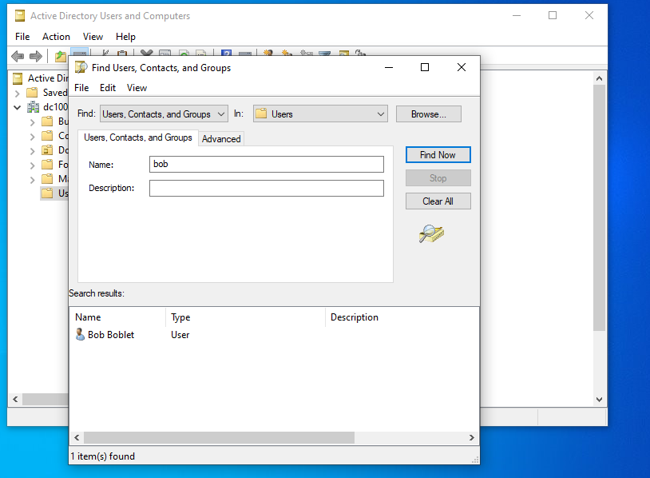
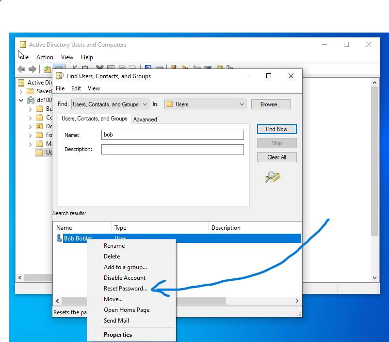
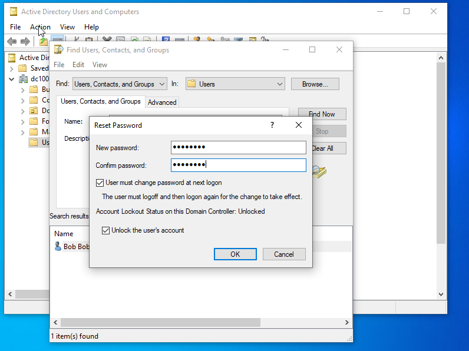

Resetting A User's Password in Active Directory
Potential Issues
User forgot password
Account locked due to too many failed login attempts
Password expired
Resolution
Steps:
- In windows searchbar type adm and click Windows Administrative Tools
- Open Active Directory Users and Computers

- right click users folder and click find...
- search User's name and click Find Now

- right click User's name and click reset password

- create a temporary password for the user
- ensure that both boxes are checked (ie. User must change password at next logon and Unlock the User's Account)
- click OK once completed
